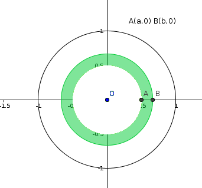
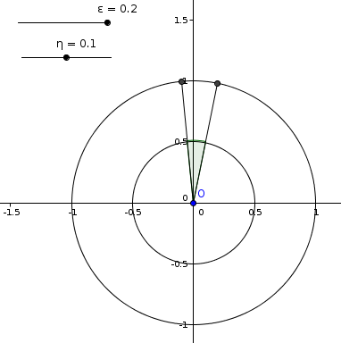

| Choisissez votre langue ! | Choose your language ! |
Variables indépendantes
Independent variables
En outre le lecteur est supposé connaître le contenu de la page consacrée aux .
Dans tout ce qui suit (Ω,\( \mathfrak{T}\),P) désigne un espace probabilisé et X et Y seront des variables aléatoires sur cet espace et à valeurs réelles.
Evènement lié à une v.a.
In addition, the reader is supposed to know the content of the page devoted to .
In everything that follows (Ω,\( \mathfrak{T}\),P) designates a probability space and X and Y will be random variables on this space and with real values.
Event linked to a r.v.

Evènement conditionné par une v.a.
Event conditioned by a r.v.
A priori la probabilité ci-dessus a un sens si et seulement si P(X=a)≠ 0, mais pour une probabilité à densité il est encore possible, dans certains cas, de définir P(E|X=a) même quand l'évènement X=a est de probabilité nulle.
Soient en effet deux nombres positifs ε et η, on a :
\( \displaystyle P\left\{ E \mid X \in \right\rbrack\left. x - \epsilon,x + \eta \right\rbrack\} = \frac{P\left\{ E \cap X \in \right\rbrack\left. x - \epsilon,x + \eta \right\rbrack\}}{F\left( {x + \eta} \right) - F\left( {x - \epsilon} \right)} \)
où F est la fonction de répartition de X.A priori the above probability has meaning if and only if P(X=a)≠ 0, but for a density probability it is still possible, in certain cases, to define P(E|X=a) even when the event X=a has zero probability.
Let in fact be two positive numbers ε and η, we have:
\( \displaystyle P\left\{ E \mid X \in \right\rbrack\left. x - \epsilon,x + \eta \right\rbrack\} = \frac{P\left\{ E \cap X \in \right\rbrack\left. x - \epsilon,x + \eta \right\rbrack\}}{F\left( {x + \eta} \right) - F\left( {x - \epsilon} \right)} \)
where F is the cumulative distribution function of X.Nous allons traiter, à tire d'exemple, un cas concret simple.
On considère un tir aléatoire uniforme dans un cercle de centre (0,0) et de rayon 1.
Un événement élémentaire se confond donc avec un point M de ce cercle.
Soit E l’événement OM≤1/2, de sorte que P(E)=1/4.
Soit A le point de coordonnées (1,0) et soit θ la mesure de l'angle \( \displaystyle \widehat{\left ( \overrightarrow{OA},\overrightarrow{OM} \right )} \)
X désigne la variable aléatoire X: →X(M)=θ. On cherche à évaluer P(E|X=π/2).
We will deal, as an example, with a simple concrete case.
We consider a uniform random shot in a circle with center (0,0) and radius 1.
An elementary event therefore merges with a point M of this circle.
Let E be the event OM≤1/2, so that P(E)=1/4.
Let A be the point with coordinates (1,0) and let θ angle measurement \( \displaystyle \widehat{\left ( \overrightarrow{OA},\overrightarrow{OM} \right )} \)
X designates the random variable X: →X(M)=θ. We seek to evaluate P(E|X=π/2).

On a P({X∈]π/2-ε,π/2+η]})=(ε+η)/2.
Donc P(E|X=π/2)=1/4.
Ici le rapport des probabilités étant constant il n'y a pas de limite véritable à calculer.
On remarque que l'on a P(E)=P(E|X=π/2) et que plus généralement P(E)=P(E|X=α) et encore P(E)=P(E|α<X≤β).
E est donc indépendant de tout événement lié à X.
C'est ce qui justifie la définition qui suit.
We have P({X∈]π/2-ε,π/2+η]})=(ε+η)/2.
So P(E|X=π/2)=1/4.
Here the ratio of probabilities being constant there is no real limit to calculate.
We notice that we have P(E)=P(E|X=π/2) and that more generally P(E)=P(E|X=α) and again P(E)=P( E|α<X≤β).
E is therefore independent of any event linked to X.
This is what justifies the definition that follows.
Extension au cas des variables à densité du théorème des probabilités totales
Extension to the case of variables with densities of the total probability theorem
On suppose que pour tout x P(E|X=x) existe au sens précédent.
Dans ces conditions :
\( \displaystyle P(E) = {\int_{- \infty}^{+ \infty}P\left( {E \mid X = x} \right)}f(x){dx} \)
We assume that for all x P(E|X=x) exists in the previous sense.
In these conditions :
\( \displaystyle P(E) = {\int_{- \infty}^{+ \infty}P\left( {E \mid X = x} \right)}f(x){dx} \)
Soit (xi) 1≤i≤n une suite strictement croissante de réels.
Si toutes les valeurs possibles de X sont entre x1 et xn, le théorème des probabilités totales classique donne :
\( \displaystyle P(E) = {\sum\limits_{i = 1}^{n - 1}P\left( {\left. E \mid X \in \right\rbrack\left. x_{i},x_{i + 1} \right\rbrack} \right)\left( F\left( x_{i + 1} \right) - F\left( x_{i} \right) \right)} \)
Ainsi, dans le cas particulier où X prend toutes ses valeurs dans un intervalle compact, le théorème sera obtenu par passage à la limite en prenant des de cet intervalle de pas de plus en plus petit et tendant vers 0.Pour le cas général et si X est positive on construira une suite monotone de v.a. possédant la propriété ci-dessus et convergeant vers X.
Le cas général s'obtiendra par linéarité.
Variables aléatoires indépendantes
Let (xi) 1≤i≤n be a strictly increasing sequence of real numbers.
If all possible values of X are between x1 and xn, the classic total probability theorem gives:
\( \displaystyle P(E) = {\sum\limits_{i = 1}^{n - 1}P\left( {\left. E \mid X \in \right\rbrack\left. x_{i},x_ {i + 1} \right\rbrack} \right)\left( F\left( x_{i + 1} \right) - F\left( x_{i} \right) \right)} \)
Thus, in the particular case where X takes all its values in a compact interval, the theorem will be obtained by passing to the limit taking of this interval with ncreasingly smaller step and tending towards 0.For the general case and if X is positive we will construct a monotonic sequence of r.v. having the above property and converging towards X.
The general case will be obtained by linearity.
Independent random variables
C'est à dire, compte tenu de la définition de l'indépendance des évènements, si P((X∈I)∧(Y∈J))=P(X∈I)×P(Y∈J).
That is to say, given the definition of the independence of events, if P((X∈I)∧(Y∈J))=P(X∈I)×P(Y∈J).
Exemples
- Soient A et B deux événements indépendants, X et Y leurs fonctions caractéristiques respectives, alors X et Y sont indépendantes.
- On considère l’événement "tirer 13 cartes (une main) dans un ".
Soit X la variable "Nombre de points d'honneurs dans la main".
Soit Y la variable "Nombre de couleurs distinctes dans la main (entre 0 et 4).
Alors X et Y ne sont pas indépendantes, en effet P(X=16)≠0 et P(X=16|Y=1)=0.
On pourra également le vérifier empiriquement (voir ) - Dans le cas d'un tir uniforme dans un carré.
Soit X la variable M(x,y) → x.
Soit Y la variable M(x,y) → y
Alors X et Y sont indépendantes
autre exemple
Dans le cas d'un tir aléatoire uniforme dans un disque de centre O et de rayon 1.Soit la variable X: M → \( \displaystyle \widehat{\left ( \overrightarrow{OA},\overrightarrow{OM} \right )} \) (A(0,1)).
Soit la variable Y:M → "Distance OM"
X et Y sont indépendantes Voici une application javascript qui vous permet de vérifier expérimentalement ce fait.
Les nombres notés P(..) sont en fait les fréquences statistiques.
Mode d'emploi:
Fixer D'ABORD a et b avec les curseurs en haut à gauche ; on s'intéresse à l’événement a<OM<b
Fixer ENSUITE s et t avec les curseurs en haut à droite ; on s'intéresse à l’événement s<θ<t
Appuyer ENFIN à répétition sur le bouton '+100' pour provoquer des séries de 100 tirs aléatoires.
Les fréquences des divers événements sont affichées à chaque fois avec cumuls.
Appuyer sur 'Recommencer' pour tout réinitialiser.
Examples
- Let A and B be two independent events, X and Y their respective characteristic functions, then X and Y are independent.
- We consider the event "draw 13 cards (one hand) in a .
Let X be the variable "Number of honor points in the hand".
Let Y be the variable "Number of distinct colors in the hand (between 0 and 4).
Then X and Y are not independent, in fact P(X=16)≠0 and P(X=16|Y=1)=0.
We can also verify it empirically (see ) - In the case of a uniform shot in a square.
Let X be the variable M(x,y) → x.
Let Y be the variable M(x,y) → y
Then X and Y are independent
another example
In the case of a uniform random shot in a disk with center O and radius 1.Let the variable be X: M → \( \displaystyle \widehat{\left ( \overrightarrow{OA},\overrightarrow{OM} \right )} \) (A(0,1)).
Let the variable Y:M → “Distance OM”
X and Y are independent Here is a javascript application that allows you to experimentally verify this fact.
The numbers denoted P(..) are in fact the statistical frequencies.
Instructions for use:
FIRST set a and b with the sliders at the top left; we are interested in the event a<OM<b
THEN set s and t with the cursors at the top right; we are interested in the event s<θ<t
FINALLY press the '+100' button repeatedly to trigger series of 100 random shots.
The frequencies of the various events are displayed each time with accumulations.
Press 'Restart' to reset everything.
Cas des variables ne prenant qu'un nombre fini de valeurs
Si X ne prend que les valeurs {x1, .... ,xm}.et que Y ne prend que les valeurs {y1, .... ,yn}.
L'indépendance de X et Y implique en particulier que pour tout couple (i,j) ∈ [1,m]×[1,n], on a:
P(X=xi ∧ Y=yj)=P(X=xi)×P(Y=yj).
Réciproquement cette condition est suffisante dans la mesure où si I est un intervalle :
\( \displaystyle P\left( {X \in I} \right) = {\sum\limits_{i}{P\left( {X = x_{i}} \right)}} \)
La sommation étant étendue à tous les indices i pour lesquels xi∈I, la même chose valant pour la variable Y et un autre intervalle J. On peut donc, dans ce cas très simple établir l'indépendance au moyen d'une table reflétant la loi du couple (X,Y) et les lois de X et Y dites lois 'marginales'.Voir par exemple .
Propriétés des variables indépendantes
Espérance
Concernant les espérances de deux v.a. indépendantes, nous avons le résultat suivant :Case of variables taking only a finite number of values
If X only takes the values {x1, .... ,xm}.and that Y only takes the values {y1, .... ,yn}.
The independence of X and Y implies in particular that for any pair (i,j) ∈ [1,m]×[1,n], we have:
P(X=xi ∧ Y=yj)=P(X=xi)×P(Y=y< sub>j).
Conversely this condition is sufficient to the extent that if I is an interval:
\( \displaystyle P\left( {X \in I} \right) = {\sum\limits_{i}{P\left( {X = x_{i}} \right)}} \)
The summation being extended to all indices i for which xi∈I, the same thing being valid for the variable Y and another interval J. We can therefore, in this very simple case, establish independence by means of a table reflecting the law of the couple (X,Y) and the laws of X and Y called 'marginal' laws.See for example .
Properties of independent variables
Expectation
Concerning the expectations of two independent r.v.'s , we have the following result:Dans ce cas il en est de même de la variable aléatoire produit XY et E(XY)=E(X)E(Y).
In this case it is the same for the random variable product XY and E(XY)=E(X)E(Y).
démonstration
Cas où Ω est un univers fini
| X\Y |
y1 |
y2 |
... |
yk |
Sommes
des lignes Sums
of rows |
| x1 |
r11 |
r12 |
... |
r1k |
p1 |
| x2 |
r21 |
r22 |
... |
r2k |
p2 |
| ... |
... |
... |
... |
... |
... |
| xh |
rh1 |
rh2 |
rhk |
ph |
|
|
Sommes
des colonnes Sums
of columns |
q1 |
q2 |
... |
qk |
1 |
- X prend les valeurs x1,x2, ... , xh
- Y prend les valeurs y1, y2, ... ,yk
- pi=P(X=xi) 1 ≤ i ≤ h
- qj=P(Y=yj) 1 ≤ j ≤ k
- rij=P(X=xi et Y=yj)
- rij=piqj (traduction de l'indépendance)
- \( \displaystyle q_{j} = {\sum\limits_{i = 1}^{h}r_{ij}} \) (théorème des probabilités totales)
- \( \displaystyle p_{i} = {\sum\limits_{j = 1}^{k}r_{ij}} \) (théorème des probabilités totales)
\( \displaystyle E({XY}) = {\sum\limits_{1 \leq i \leq h,1 \leq j \leq k}r_{ij}x_{i}y_{j}} \)
\( \displaystyle E({XY}) = {\sum\limits_{i,j}p_{i}q_{j}x_{i}y_{j}} \)
\( \displaystyle E({XY}) = {\sum\limits_{i}{\sum\limits_{j}p_{i}q_{j}x_{i}y_{j} = {\sum\limits_{i}p_{i}x_{i}{\sum\limits_{j}q_{j}y_{j} = {\sum\limits_{i}p_{i}x_{i}E(Y) = E(Y){\sum\limits_{i}p_{i}x_{i}} = E(Y)E(X)}}}}} \)
Cas où Ω est un univers dénombrable
On commence par supposer que X et Y sont positives et on raisonne comme ci-dessus les sommes finies étant remplacées par des séries à termes positifs.Il suffit alors d'appliquer les résultats sur l'associativité des à termes positifs.
Si X et Y ne sont pas positives on peut écrire X =X+-X- avec X+=Sup(X,0) et X-=Sup(-X,0)où X+ et X- sont positives.
Idem pour Y=Y+-Y-
ON a alors E(XY)=E((X+-X-)(Y+-Y-))
Par linéarité de l'espérance E(XY)=E(X+Y+)-E(X+Y-)-E(X-Y+)+E(X-Y-).
Les 4 v.a. X+,X-,Y+,Y- étant toutes positives on applique le résultat précédent.
E(XY)=E(X+)E(Y+)-E(X+)E(Y-)-E(X-)E(Y+)+E(X-)E(Y-)
E(XY)=E(X+)(E(Y+)-E(Y-))-E(X-)(E(Y+)-E(Y-))
A nouveau par linéarité
E(XY)=E(X+)E(Y)-E(X-)E(Y)=(E(X+)-E(X-))E(Y)=E(X)E(Y)
Autres cas où Ω a au moins la puissance du continu
Examinons tout d'abord le cas où X ne prend qu'un nombre fini de valeurs x1,x2, ..., xh et Y ne prend qu'un nombre fini de valeurs y1,y2, ...,yk. Nous sommes donc dans le cas de fonctions 'étagées'.Il résulte de la définition que les évènements (Ai) 1≤i≤h et(Bj) 1≤j≤k sont tous deux à deux incompatibles et si on pose pi=P(Ai), qj=P(Bj), on a P(Ai∩Bj)=piqj.
En outre \( \displaystyle E(X) = {\sum\limits_{i = 1}^{h}x_{i}p_{i}} \) et \( \displaystyle E(Y) = {\sum\limits_{j = 1}^{k}y_{j}q_{j}} \)
De plus si on pose rij=P((X=xi)∧(Y=yj) on a rij=piqj pour tous les couples (i,j).
De sorte que la démonstration est tout à fait identique à celle du premier cas (Ω univers fini).
\( \displaystyle E({XY}) = {\sum\limits_{1 \leq i \leq h,1 \leq j \leq k}r_{ij}x_{i}y_{j}} \)
\( \displaystyle E({XY}) = {\sum\limits_{i,j}p_{i}q_{j}x_{i}y_{j}} \)
\( \displaystyle E({XY}) = {\sum\limits_{i}{\sum\limits_{j}p_{i}q_{j}x_{i}y_{j} = {\sum\limits_{i}p_{i}x_{i}{\sum\limits_{j}q_{j}y_{j} = {\sum\limits_{i}p_{i}x_{i}E(Y) = E(Y){\sum\limits_{i}p_{i}x_{i}} = E(Y)E(X)}}}}} \)
Nous utilisons maintenant un résultat de théorie de l'intégration (convergence dominée) qui dit que pour toute v.a. X définie sur Ω, positive et ayant une espérance on peut trouver une suite croissante de fonctions étagées convergeant verx X et dont les intégrales convergent vers l'intégrale de X.En substance ce résultat ressemble un peu dans son esprit à l'approximation des fonctions continues sur un intervalle compact par des fonctions en escalier.
Le résultat vaut donc pour toutes les v.a. positives.
Par la suite on passe du cas positif au cas général par linéarité comme précédemment.
proof
Case where Ω is a finite universe
| X\Y |
y1 |
y2 |
... |
yk |
Sommes
des lignes Sums
of rows |
| x1 |
r11 |
r12 |
... |
r1k |
p1 |
| x2 |
r21 |
r22 |
... |
r2k |
p2 |
| ... |
... |
... |
... |
... |
... |
| xh |
rh1 |
rh2 |
rhk |
ph |
|
|
Sommes
des colonnes Sums
of columns |
q1 |
q2 |
... |
qk |
1 |
- X takes the values x1,x2, ..., xh
- Y takes the values y1, y2, ... ,yk
- pi=P(X=xi) 1 ≤ island; h
- qj=P(Y=yj) 1 ≤ j ≤ k
- rij=P(X=xi and Y=yj)
- rij=piqj (translation of independence)
- \( \displaystyle q_{j} = {\sum\limits_{i = 1}^{h}r_{ij}} \) (total probability theorem)
- \( \displaystyle p_{i} = {\sum\limits_{j = 1}^{k}r_{ij}} \) (total probability theorem)
\( \displaystyle E({XY}) = {\sum\limits_{1 \leq i \leq h,1 \leq j \leq k}r_{ij}x_{i}y_{j}} \)
\( \displaystyle E({XY}) = {\sum\limits_{i,j}p_{i}q_{j}x_{i}y_{j}} \)
\( \displaystyle E({XY}) = {\sum\limits_{i}{\sum\limits_{j}p_{i}q_{j}x_{i}y_{j} = {\sum\limits_{i} p_{i}x_{i}{\sum\limits_{j}q_{j}y_{j} = {\sum\limits_{i}p_{i}x_{i}E(Y) = E(Y) {\sum\limits_{i}p_{i}x_{i}} = E(Y)E(X)}}}}} \)
Case where Ω is a countable space
We start by assuming that X and Y are positive and we reason as above with the finite sums being replaced by series with positive terms.It is then sufficient to apply the results on the associativity of the with positive terms.
If X and Y are not positive we can write X =X+-X- with X+=Sup(X,0) and X-=Sup(-X,0)where X+ and X- are positive.
Same for Y=Y+-Y-
WE then have E(XY)=E((X+-X-)(Y+-Y-))
By linearity of the expectation E(XY)=E(X+Y+)-E(X+Y-)-E(X-Y+)+E(X-Y-).
The 4 v.a. X+,X-,Y+,Y- being all positive we apply the previous result .
E(XY)=E(X+)E(Y+)-E(X+)E(Y-)-E(X-)E(Y+)+E(X-)E(Y-)
E(XY)=E(X+)(E(Y+)-E(Y-))-E(X-)(E(Y+)-E(Y-))
Again by linearity
E(XY)=E(X+)E(Y)-E(X-)E(Y)=(E(X+)-E(X-))E(Y)=E(X)E(Y)
Other cases where Ω has at least the cardinality of the continuum
Let us first examine the case where X only takes a finite number of values x1,x2, ..., xh and Y only takes a finite number of values y1,y2, ...,yk. We are therefore in the case of 'stepped' functions.It follows from the definition that the events (Ai) 1≤i≤h and (Bj) 1≤j≤ k are both incompatible and if we set pi=P(Ai), qj=P( Bj), we have P(Ai∩Bj)=piq j.
Furthermore \( \displaystyle E(X) = {\sum\limits_{i = 1}^{h}x_{i}p_{i}} \) And \( \displaystyle E(Y) = {\sum\limits_{j = 1}^{k}y_{j}q_{j}} \)
Moreover if we put rij=P((X=xi)∧(Y=yj) we have r ij=piqj for all pairs (i,j).
So that the demonstration is completely identical to that of the first case (Ω finite space).
\( \displaystyle E({XY}) = {\sum\limits_{1 \leq i \leq h,1 \leq j \leq k}r_{ij}x_{i}y_{j}} \)
\( \displaystyle E({XY}) = {\sum\limits_{i,j}p_{i}q_{j}x_{i}y_{j}} \)
\( \displaystyle E({XY}) = {\sum\limits_{i}{\sum\limits_{j}p_{i}q_{j}x_{i}y_{j} = {\sum\limits_{i} p_{i}x_{i}{\sum\limits_{j}q_{j}y_{j} = {\sum\limits_{i}p_{i}x_{i}E(Y) = E(Y) {\sum\limits_{i}p_{i}x_{i}} = E(Y)E(X)}}}}} \)
We now use a result from integration theory (dominated convergence) which says that for any r.v. the integral of X defined on Ω, positive and having an expectation we can find an increasing sequence of stepped functions converging towards x X and whose integrals converge towards the integral of X..In substance this result somewhat resembles in spirit the approximation of continuous functions on a compact interval by stepped functions.
The result therefore applies to all positive r.v..
Subsequently we move from the positive case to the general case by linearity as before.
Variance
Variance
Dans ce cas il en est de même de la variable aléatoire somme X+Y et v(X+Y)=v(X)+v(Y).
In this case it is the same for the random variable sum X+Y and v(X+Y)=v(X)+v(Y).
\( \displaystyle v\left( {X + Y} \right) = E\left( \left( {X + Y} \right)^{2} \right) - {E\left( {X + Y} \right)}^{2} \)
\( \displaystyle = E\left( X^{2} + 2{XY} + Y^{2} \right) - \left( E(X) + E(Y) \right)^{2} \)
\( \displaystyle = E\left( X^{2} \right) + 2E({XY}) + E\left( Y^{2} \right) - {E(X)}^{2} - 2E(X)E(Y) - {E(Y)}^{2} \)
\( \displaystyle = E\left( X^{2} \right) - {E(X)}^{2} + E\left( Y^{2} \right) - {E(Y)}^{2} = v(X) + v(Y) \)
NB: La réciproque est fausseFamille de variables indépendantes
La notion d'indépendance de deux v.a. réelles se généralise ainsi:\( \displaystyle v\left( {X + Y} \right) = E\left( \left( {X + Y} \right)^{2} \right) - {E\left( {X + Y} \right)}^{2} \)
\( \displaystyle = E\left( X^{2} + 2{XY} + Y^{2} \right) - \left( E(X) + E(Y) \right)^{2} \)
\( \displaystyle = E\left( X^{2} \right) + 2E({XY}) + E\left( Y^{2} \right) - {E(X)}^{2} - 2E(X)E(Y) - {E(Y)}^{2} \)
\( \displaystyle = E\left( X^{2} \right) - {E(X)}^{2} + E\left( Y^{2} \right) - {E(Y)}^{2} = v(X) + v(Y) \)
NB: The converse is false.Families of independent variables
the notion of independence of two real variables cans b e generalized as follows :P(Xi1∈I1∧ Xi2∈I2 ∧...∧Xip∈Ip)= P(Xi1∈I1)×P(Xi2∈I2)×......×P(Xip∈Ip)
P(Xi1∈I1∧ Xi2∈I2 ∧...∧Xip∈Ip)= P(Xi1∈I1)×P(Xi2∈I2)×......×P(Xip∈Ip)
Covariance
La covariance de deux variables aléatoires X et Y est définie par analogie avec les caractères en statistiques au moyen des espérances.Covariance
The covariance of two random variables X and Y is defined by analogy with the variables in statistics by means of expectations.|
Création Gilles Dubois - licence CC-BY-SA
Created by Gilles Dubois - licence CC-BY-SA
|
Septembre 2023
September 2023
|
Version mobile Jquery
Mobile Jquery version
|
|